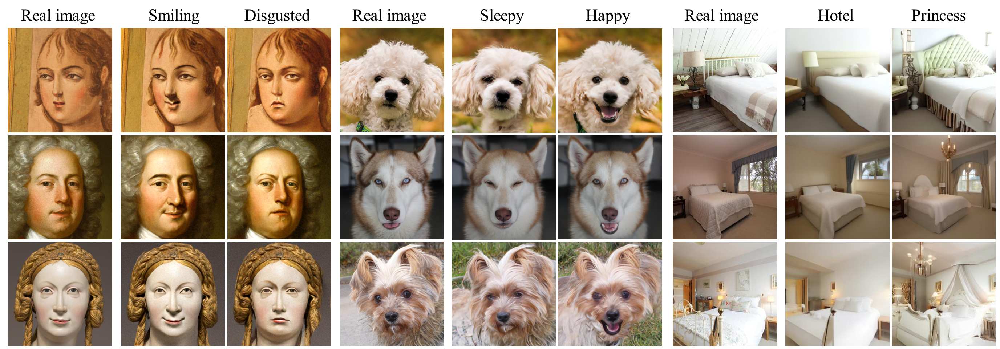
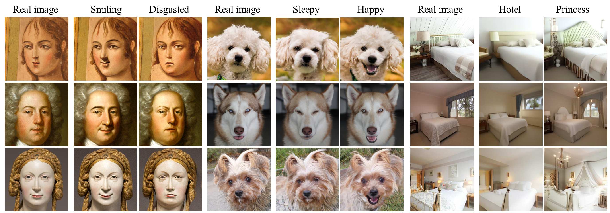
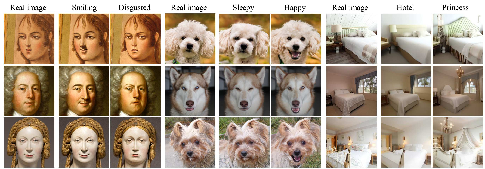

Results
CelebA-HQ, LSUN-Church, AFHQ-dog, METFACES, LSUN-bedroom
 

Diffusion models achieve outstanding generative performance in various domains. Despite their great success, they lack semantic latent space which is essential for controlling the generative process. To address the problem, we propose asymmetric reverse process (Asyrp) which discovers the semantic latent space in frozen pretrained diffusion models. Our semantic latent space, named h-space, has nice properties for accommodating semantic image manipulation: homogeneity, linearity, robustness, and consistency across timesteps. In addition, we measure editing strength and quality deficiency of a generative process at timesteps to provide a principled design of the process for versatility and quality improvements. Our method is applicable to various architectures (DDPM++, iDDPM, and ADM) and datasets (CelebA-HQ, AFHQ-dog, LSUN-church, LSUN-bedroom, and METFACES).
The green box on the left illustrates Asyrp which only alters $ P_t $ while preserving $ D_t $ shared by DDIM. The right describes that Asyrp drifts the original reverse process toward the target attribute reflecting the change in $ h $-space.



© This webpage was in part inspired from this template.